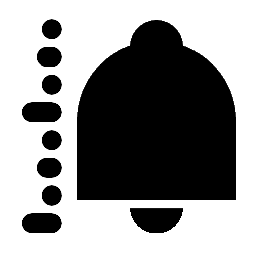

StockMeter
Track Stocks, Mutual Funds & Indexes with private price alerts synced to your Google Drive.
About
StockMeter is a Flutter project developed for educational and research purposes. It serves as a
personal monitoring tool for tracking Stock Exchanges, Mutual Funds, and Global Market Indexes
using the Google Finance ecosystem.
The project explores the integration of mobile applications with private cloud backends to feature:
- Live Market Observation: Real-time tracking of equities and fund NAVs.
- Customizable Notifications: Threshold-based alerts for price movements.
- Trading Simulations: A sandbox environment to test strategies using historical and current
data.
StockMeter is built with a Zero-Knowledge Architecture, ensuring that your financial
intelligence remains entirely under your control.
Privacy Policy (Data Sovereignty)
To ensure maximum privacy, StockMeter utilizes your personal Google Drive as its primary
database rather than a third-party server.
- Private Storage: All portfolio data and calculations are stored in Google
Sheets within your own account.
- Scoped Permissions: A Google Account is required. StockMeter requests permission to access
only the specific files it creates.
- No Tracking: The application does not collect personal data, nor does it access any files
beyond the strictly required Google Sheets. Your strategy is invisible to everyone—including the developers.
Terms of Service (Disclaimer)
This application is provided for informational purposes only, not for trading advice or active
execution.
- Data Latency: Market information is provided by Google Finance and may be delayed by
up to 20 minutes. Please refer to the Google Finance Disclaimer for details.
- Alert Timing: Notifications may experience additional delays based on your device's
periodic background check configuration.
- Investment Risk: StockMeter is a learning tool. The developers are not responsible for any
financial decisions or losses incurred. Always consult a professional for trading advice.

Last modified: January 21, 2026
© 2026 patrisiu.com. All rights reserved.